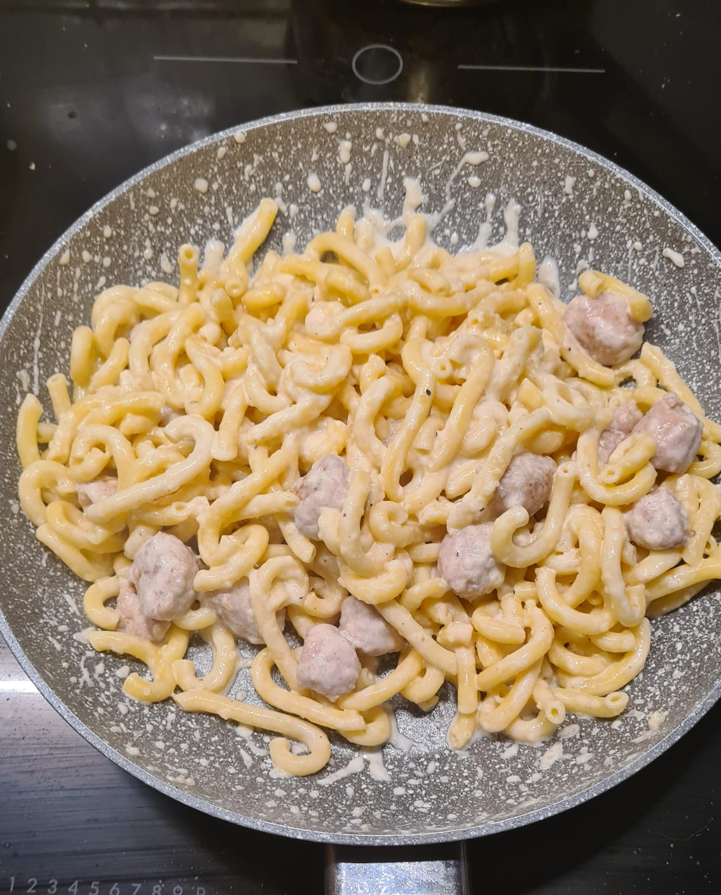

Gramigna con panna e salsiccia

Ingredienti
- 100 g di gramigna
- 50 g di panna
- 100 g di salsiccia
- 10 g di formaggio grattugiato
- 15 g di burro
- Sale e pepe q.b.
Procedimento
- Togliere la salsiccia dal budello e tagliarla a tocchetti.
- Far sciogliere il burro in una padella, quindi aggiungere la salsiccia e farla rosolare.
- Cuocere la pasta fino a che risulti al dente.
- Scolare la pasta e trasferirla nella padella con la salsiccia.
- Aggiungere il formaggio grattugiato e la panna, mescolare bene.
- Regolare di sale e pepe a piacere.
- Impiattare e servire caldo. Buon appetito!